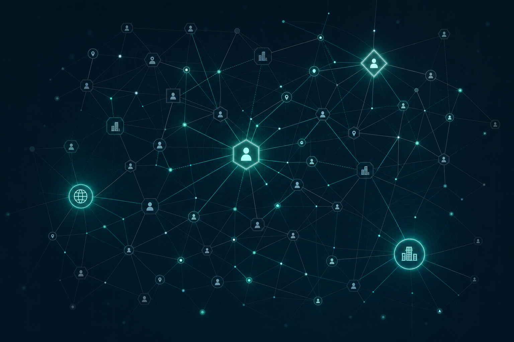

Intelligence, not
search results.
OAP builds the OSINT App Platform, an engine that reasons about a requirement before it collects, correlates every finding deterministically, and writes an auditable intelligence product that answers exactly what was asked.
Operating ethos
“After truth, and what we can prove.”
Factual. Well-reasoned judgments, labeled as judgments. Engineered to present evidence without slant. No fluff. Every sentence earns its place.
Research finds information. Intelligence answers a question.
A search engine returns hits. An intelligence officer reads the requirement, decides what matters, collects against it, weighs the evidence, and delivers a product the decision-maker can act on and defend.
The OSINT App Platform does the second one. Every seed, search, evidence item, entity, relationship, and report sentence must state how it relates to the requirement, or it never enters analysis.
- Understanding precedes collection. The platform interprets the requirement and records what it means before the first query fires.
- Provable over plausible. Confidence is earned from source reliability, corroboration, and relevance, and scored the same way every time.
- Everything is auditable. A reviewer can always ask “why do you believe this?” and see the answer.

Five stages, one governing requirement
A clearly defined intelligence requirement is the spine of every case. It is the gate, the yardstick, and the lens for everything downstream.
Define & intake
The requirement is captured and broken into the specific sub-questions the case must answer. Any known starting information is validated and kept clean from the start.
A clean, governed startUnderstand, before any collection
The platform reaches a recorded understanding of what the requirement means and what each piece of known information contributes, before a single query fires.
Understanding precedes collectionCollect: adaptive, multi-pass
An adaptive, multi-pass process tightens toward the requirement and stops when the questions are answered. Every item is resolved, classified, and scored for relevance as it arrives, so noise never reaches analysis.
Tightens toward the requirementAnalyze: deep correlation
Competing hypotheses, clear key judgments, and an honest accounting of what remains unknown are built and carried forward. Relationships are evidence-backed and confidence is consistent.
Hypotheses · judgments · gapsReport: the intelligence product
The report answers the requirement in its own idiom, business, threat, policy, due-diligence, with an honest accounting of the run, a true chronology, and every factual claim traceable to its evidence.
Answers the question, and proves itCapabilities that hold up under review
Connectors are commodity. The proprietary reasoning over them is the platform.
Requirement-driven collection
Nothing is collected without a governing requirement. The relevance score is a filter, not decoration. Irrelevant hits are logged for audit, never promoted into the case.
Patent-pending correlation
A patent-pending deterministic method reconciles findings, so the same inputs always produce the same result. The same evidence is scored the same way every time, no contradictory confidence for the same fact.
Auditable judgments
Every consequential judgment is recorded to an inspectable, append-only audit trail. The chain from evidence to claim to confidence is always there to review.
Multi-agent analysis
A multi-agent pipeline applies specialized reasoning at each stage and reconciles multiple models into a single, recorded judgment, so the case proceeds from one coherent understanding.
Confidence you can defend
Confidence reflects source reliability, corroboration, and relevance, and the same evidence is scored the same way every time. One assertion, one confidence you can stand behind.
Customer-grade reports
The product reads as a direct answer to the requirement, with real analysis, a true chronology, an honest accounting of the run, and no boilerplate. It ships only what it can prove.
Built for analysts who have to be right
Investigators & analysts
Due-diligence, background, and threat workflows that demand an evidence trail, not a pile of unverified links.
Corporate & competitive intelligence
Market, competitor, and business-intelligence questions answered in the customer's own idiom, with sourced judgments.
Risk, trust & safety teams
Entity resolution and relationship integrity that survive scrutiny when a decision has to be justified.
Researchers & educators
A transparent engine for teaching and practicing structured analytic tradecraft, end to end.
We're still perfecting the OSINT App Platform.
Sign up to get email updates as we get closer to release.
Put the requirement first.
OAP is onboarding a select group of analysts and teams. Request access to the OSINT App Platform and see intelligence engineered the way it should be.